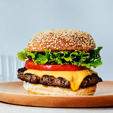

BURGER

Description
Is a patty of ground beef grilled and placed between two halves of a bun. Slices of raw onion, lettuce, bacon, mayonnaise, and other ingredients add flavor. Burgers are considered an American food but are popular around the world. In Japan, teriyaki burgers are popular.
Ingredients
½ teaspoon ground black pepper
½ cup fine dry bread crumbs
Steps
Step 1 :"Preheat an outdoor grill for high heat and lightly oil grate. "
Step 2 :"Whisk together egg, salt, and pepper in a medium bowl. "
Step 3 :"Add ground beef and bread crumbs and mix with your hands or a fork until well blended. "
Step 4 :"Form into four 3/4-inch-thick patties. "
Step 5 :"Place patties on the preheated grill. Cover and cook 6 to 8 minutes per side, or to desired doneness. An instant-read thermometer inserted into the center should read at least 160 degrees F (70 degrees C). "
Step 6 :"Serve hot and enjoy! "